O ambiente de testes
Montar, ao lado da produção, uma segunda instalação cheia de dados inventados, para aprender e experimentar sem tocar em nada real — e entrar nela.
A plataforma está instalada e protegida, mas ainda vazia. Antes de lhe confiar dados reais, vale a pena ter um sítio onde se possa experimentar à vontade. É isso que montamos agora: o ambiente de testes.
O que é
O ambiente de testes é uma segunda instalação, na mesma máquina, ao lado da produção. A produção continua na porta 8080; os testes ficam na 8090.
E são mesmo separados: outra base de dados, outro serviço, outras pastas. Os dados são inventados — uma organização fictícia, com sistemas, riscos e cinquenta mil pessoas. Tudo o que tocaria num sistema externo, como o servidor Wazuh, é recusado aqui, de propósito.
Produção e testes, lado a lado
Produção: porta 8080, a base de dados verdadeira, os dados da organização.
Testes: porta 8090, outra base de dados, outro serviço, outras pastas — nada é partilhado.
Os dados de teste são inventados: uma organização fictícia, com sistemas, riscos e 50 000 pessoas.
O que mexe em sistemas externos, como o Wazuh, fica recusado no ambiente de testes.
Criar o ambiente
Na pasta da instalação, basta um comando: sudo bash bin/ambiente-teste.sh criar. Pede o sudo porque cria uma base de dados e configura o servidor web.
Escreva:
sudo bash bin/ambiente-teste.sh criar
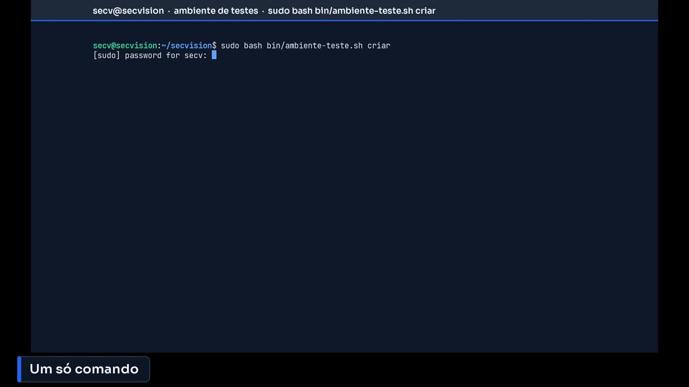
Um só comando.
Primeiro, cria uma base de dados nova, com um utilizador que só tem acesso a ela, e escreve o ficheiro de configuração do ambiente de testes, com segredos próprios — diferentes dos da produção. Depois aplica as migrações, que são as instruções que criam as tabelas.
São mais de cem migrações, aplicadas pela mesma ordem que numa atualização. Por isso este ambiente também serve para ensaiar uma atualização antes de a fazer a sério.
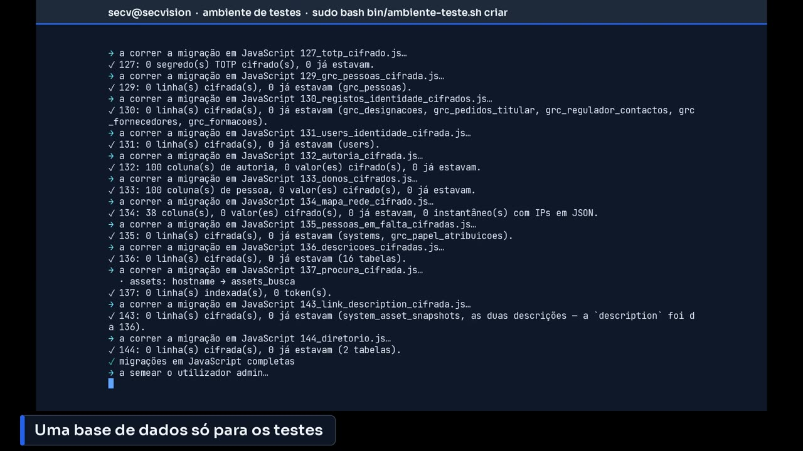
Uma base de dados só para os testes.
Os dados de teste
A seguir semeia a conta admin, tal como na produção, prepara pastas de ficheiros próprias — cópias separadas das da produção — e começa a gerar os dados.
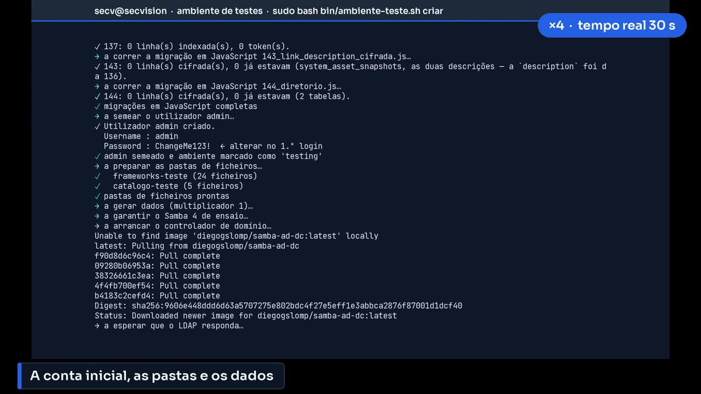
A conta inicial, as pastas e os dados.
Para se poder experimentar a ligação ao Active Directory, o script levanta um Samba de ensaio num contentor e semeia-o com cinquenta mil pessoas. É a etapa mais demorada.
Aqui pode ir buscar um café. Depois, o gerador preenche a organização fictícia: sistemas, ativos, riscos, documentos, auditorias.
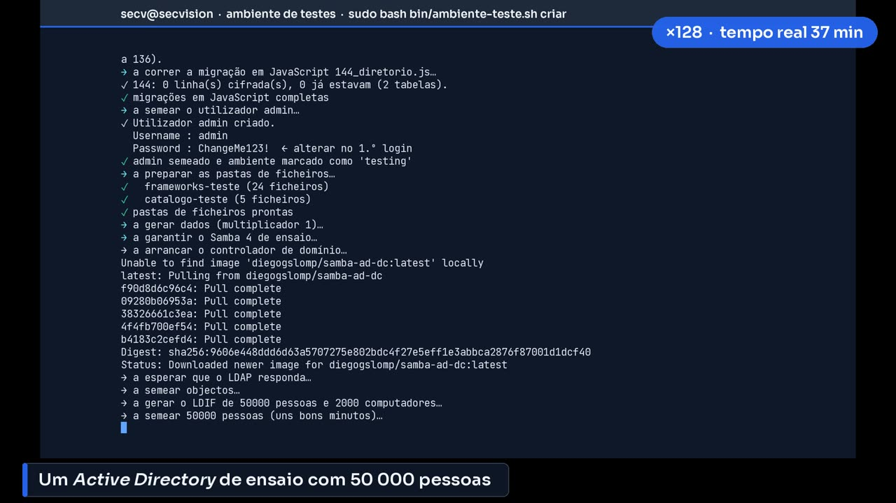
Um Active Directory de ensaio com 50 000 pessoas.
Como entrar
No fim, o script diz como se entra. A conta admin, com a palavra-passe inicial, passa pelos mesmos dois passos da página anterior. Os utilizadores gerados já estão prontos: todos com a palavra-passe Teste123!, e o mesmo segredo de segundo fator.
Acrescenta-se esse segredo uma vez à aplicação autenticadora, e serve para todos. É prático, e só é aceitável porque estes utilizadores são inventados e o ambiente é de testes.
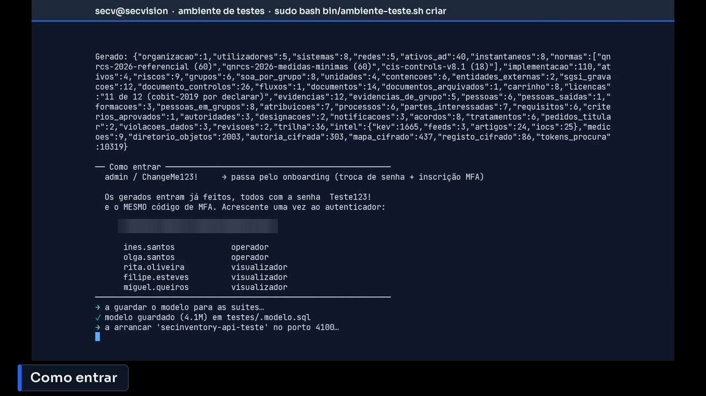
Como entrar.
Por fim, arranca o serviço do ambiente de testes e configura o servidor web na porta 8090. Quando aparece «ambiente de teste pronto», está feito.
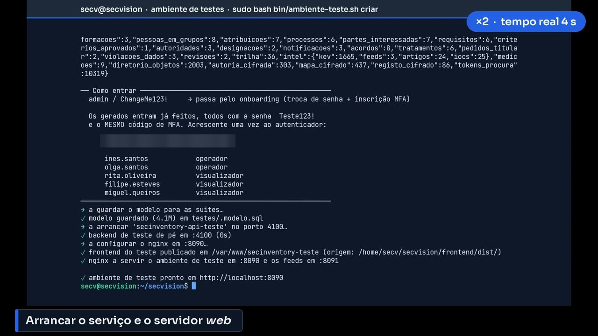
Arrancar o serviço e o servidor web.
Para confirmar, o mesmo script tem a opção estado. Mostra a base de dados, quantos registos tem cada tabela, e se o serviço e o servidor web estão a responder.
Este comando é útil mais tarde: se alguma coisa no ambiente de testes não abrir, é por aqui que se começa.
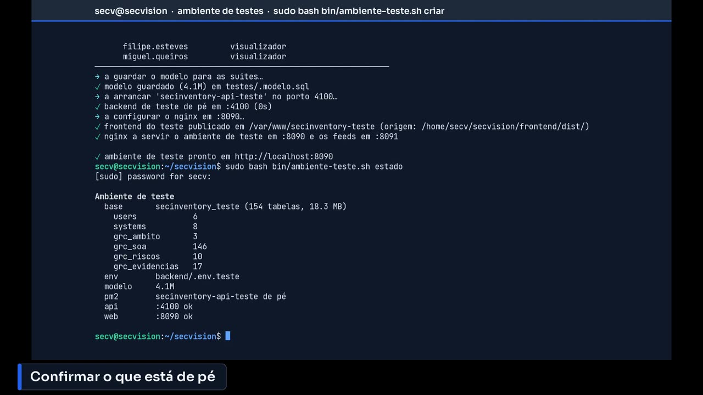
Confirmar o que está de pé.
Entrar nos testes
No browser, abrimos o mesmo endereço, mas com a porta 8090. Repare na faixa amarela no topo, AMBIENTE DE TESTES, e na moldura amarela à volta da página. Aparecem em todas as páginas, incluindo esta de entrada, para nunca se confundir com a produção.
Entramos com um dos utilizadores gerados, um operador, e a palavra-passe partilhada.
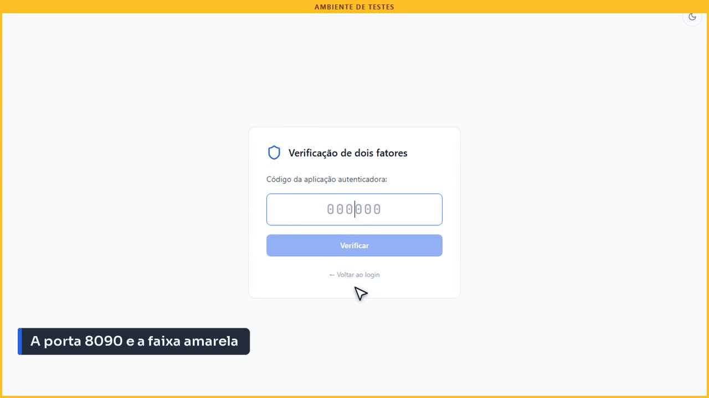
A porta 8090 e a faixa amarela.
Pede o código de segundo fator, como sempre. Escrevemos o código que a aplicação mostra para o segredo partilhado.
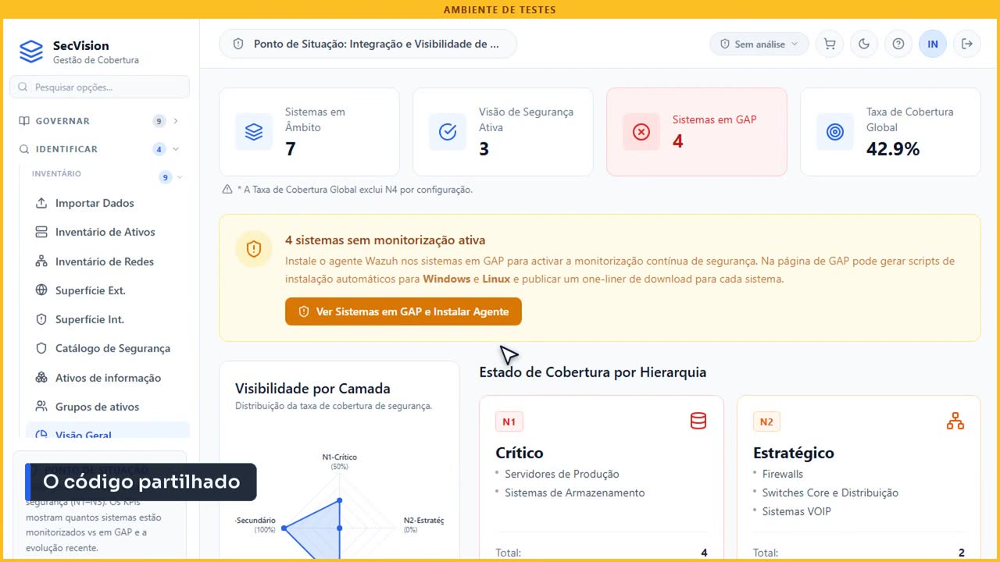
O código partilhado.
Explorar
E aqui está a diferença: o painel já está cheio. Sistemas por nível, cobertura, sistemas sem monitorização. É assim que fica a plataforma quando está a ser usada a sério.
Um painel cheio de dados.
O catálogo de segurança, com os sistemas da organização fictícia.
Pode editar, apagar, importar ficheiros — nada disto toca na produção.
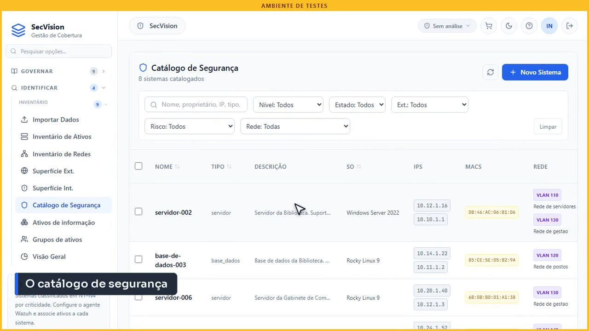
O catálogo de segurança.
E a gestão de risco, já com riscos avaliados. É um bom sítio para aprender cada módulo antes de o usar com os dados reais.
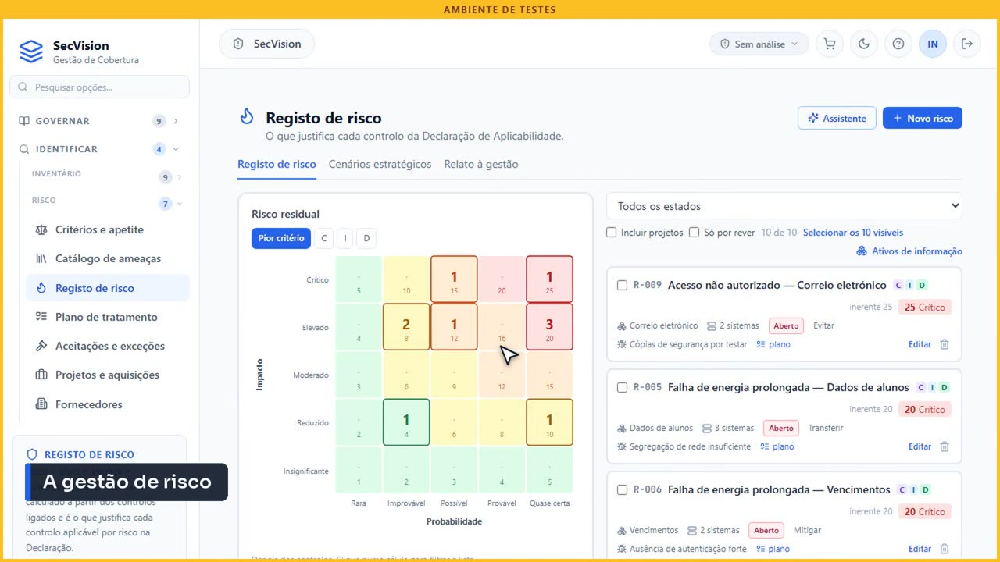
A gestão de risco.
Resumo
Três comandos para guardar. Estado, para ver o que está de pé. Recriar, para deitar tudo abaixo e começar de novo com dados frescos — útil depois de muitas experiências. E apagar, para desmontar o ambiente de testes por completo.
Em nenhum dos três a produção é tocada.
Comandos para guardar
sudo bash bin/ambiente-teste.sh estado — o que está de pé
sudo bash bin/ambiente-teste.sh recriar — deita abaixo e cria de novo, com dados frescos
sudo bash bin/ambiente-teste.sh apagar — desmonta tudo; a produção não é tocada